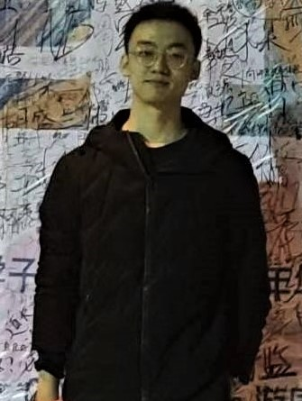
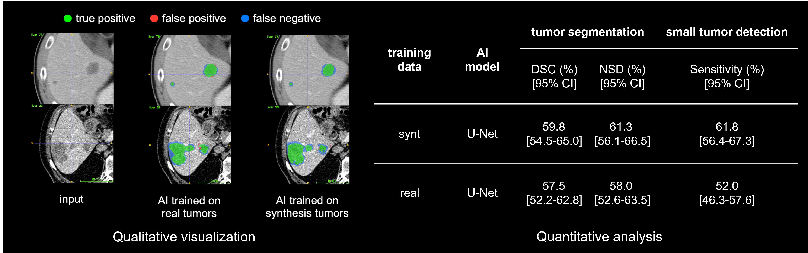
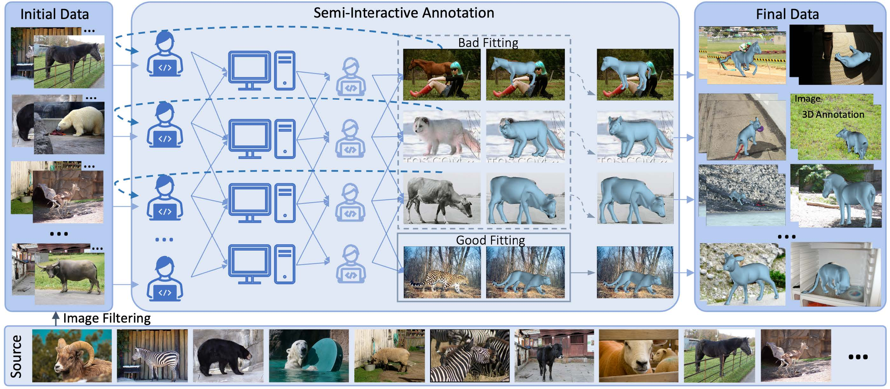
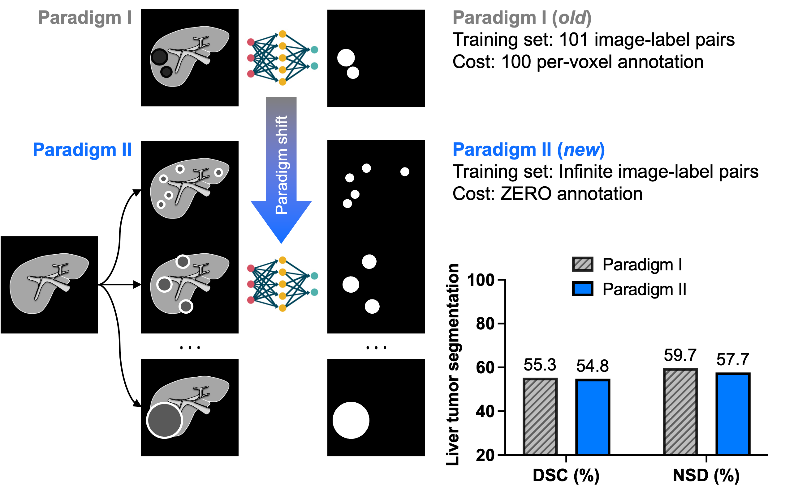
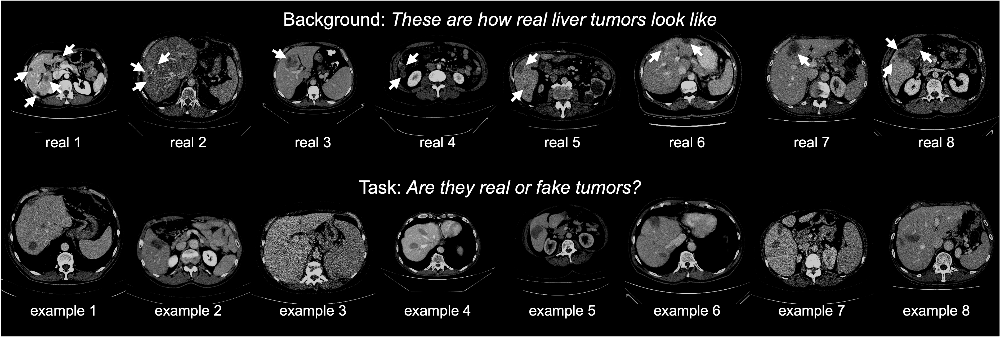
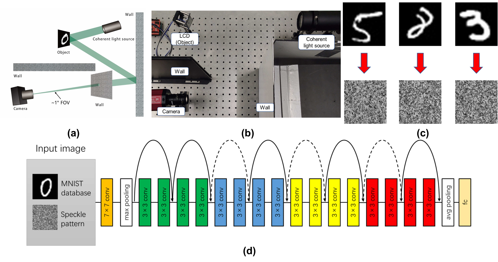

Qixin Hu | 胡琪鑫
Master Student @HUST
IEEE Member | CCF member
Huazhong University of Science & Technology (HUST)
1037 Luoyu Road, Wuhan, Hubei, China
Email: hqx11 [at] hust.edu.cn / qixinhu98 [at] gmail [dot] com


Qixin Hu | 胡琪鑫Master Student @HUST
|
 |
Hi, I am Qixin Hu (胡琪鑫). I am a master student at Huazhong University of Science and Technology (HUST). I collaborate with Prof. Alan Yuille (Bloomberg Distinguished Professor at Johns Hopkins Univeristy), Dr. Zongwei Zhou (Post-Doc at JHU) and Prof. Xinggang Wang (Professor at HUST) closely. They are really nice people and I enjoy the time working with them.
Reseach Interest: My reseach interest focus on the Computer Vision & Medical Image Analysis, especially on developing novel methods to reduce the effort of annotation for computer-aided detection & diagnosis and design foundation models for medical & health.
[04/2023] The code for synthetic tumor is released
[03/2023] One paper accepted by CVPR 2023
[10/2022] One paper accepted by Medical Meets NeurIPS 2022
*: equivalent contribution, #: corresponding author.
|  |
Liver Tumor Synthesis: Facilitating Annotation-Free Deep Learning for Cancer Detection and Localization
Qixin Hu, Yixion Chen, Junfei Xiao, Shuwen Sun, Jieneng Chen, Alan Yuille, Zongwei Zhou# |
 |
Animal3D: A Comprehensive Dataset of 3D Animal Pose and Shape
Jiacong Xu, Yi Zhang, Jiawei Peng, Wufei Ma, Artur Jesslen, Pengliang Ji, Qixin Hu, et al. |
 |
Label-free Liver Tumor Segmentation
Qixin Hu, Yixiong Chen, Junfei Xiao, Shuwen Sun, Jie-Neng Chen, Alan Yuille, Zongwei Zhou# [Publication] [Code] [Slides] [Poster] [Zongwei's Talk] [Alan's Talk] |
 |
Synthetic Tumors Make AI Segment Tumors Better
Qixin Hu, Junfei Xiao, Yixiong Chen, Shuwen Sun, Jie-Neng Chen, Alan Yuille, Zongwei Zhou# |
 |
Object recognition for remarkably small field-of-view with speckles
Qixin Hu, Siyan Xu, Xue-wen Chen, Xinggang Wang, Ken Xingze Wang# |
Department of Cognitive Science and Computer Science, Johns Hopkins Univeristy
|
|
Khoury College of Computer Sciences, Northeastern Univeristy
|
|
Department of Automation, Tsinghua Univeristy
|
|
School of Physics, Huazhong Univeristy of Science and Technology
|
Huazhong University of Science & Technology
|
|
Huazhong University of Science & Technology
|
Non-line-of-sight object identification method, system and device.
Wang Xingze, Qixin Hu
Granted on March 28, 2022; CN114202685A.
Last update: May 9th, 2023